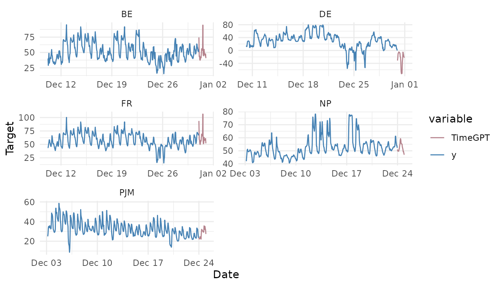

Exogenous Variables
exogenous-variables.Rmd
library(nixtlar)
#> Registered S3 method overwritten by 'tsibble':
#> method from
#> as_tibble.grouped_df dplyr1. Exogenous variables
Exogenous variables are external factors that provide additional information about the behavior of the target variable in time series forecasting. These variables, which are correlated with the target, can significantly improve predictions. Examples of exogenous variables include weather data, economic indicators, holiday markers, and promotional sales.
TimeGPT allows you to include exogenous variables when
generating a forecast. This vignette will show you how to include them.
It assumes you have already set up your API key. If you haven’t done
this, please read the Get
Started vignette first.
2. Load data
For this vignette, we will use the electricity consumption dataset
with exogenous variables included in nixtlar. This dataset
contains hourly prices from five different electricity markets, along
with two exogenous variables related to the prices and binary variables
indicating the day of the week.
df_exo_vars <- nixtlar::electricity_exo_vars
head(df_exo_vars)
#> unique_id ds y Exogenous1 Exogenous2 day_0 day_1 day_2
#> 1 BE 2016-10-22 00:00:00 70.00 49593 57253 0 0 0
#> 2 BE 2016-10-22 01:00:00 37.10 46073 51887 0 0 0
#> 3 BE 2016-10-22 02:00:00 37.10 44927 51896 0 0 0
#> 4 BE 2016-10-22 03:00:00 44.75 44483 48428 0 0 0
#> 5 BE 2016-10-22 04:00:00 37.10 44338 46721 0 0 0
#> 6 BE 2016-10-22 05:00:00 35.61 44504 46303 0 0 0
#> day_3 day_4 day_5 day_6
#> 1 0 0 1 0
#> 2 0 0 1 0
#> 3 0 0 1 0
#> 4 0 0 1 0
#> 5 0 0 1 0
#> 6 0 0 1 0When using exogenous variables, you must provide their future values
to cover the complete forecast horizon; otherwise, TimeGPT
will result in an error. Ensure that the dates of the future exogenous
variables exactly match the forecast horizon. For the electricity
consumption dataset with exogenous variables, nixtlar
provides their values for the next 24 steps ahead.
future_exo_vars <- nixtlar::electricity_future_exo_vars
head(future_exo_vars)
#> unique_id ds Exogenous1 Exogenous2 day_0 day_1 day_2 day_3
#> 1 BE 2016-12-31 00:00:00 64108 70318 0 0 0 0
#> 2 BE 2016-12-31 01:00:00 62492 67898 0 0 0 0
#> 3 BE 2016-12-31 02:00:00 61571 68379 0 0 0 0
#> 4 BE 2016-12-31 03:00:00 60381 64972 0 0 0 0
#> 5 BE 2016-12-31 04:00:00 60298 62900 0 0 0 0
#> 6 BE 2016-12-31 05:00:00 60339 62364 0 0 0 0
#> day_4 day_5 day_6
#> 1 0 1 0
#> 2 0 1 0
#> 3 0 1 0
#> 4 0 1 0
#> 5 0 1 0
#> 6 0 1 03. Forecast with exogenous variables
To generate a forecast with exogenous variables, use the
nixtla_client_forecast function as you would for forecasts
without them. The only difference is that you must add the exogenous
variables using the X_df argument.
Keep in mind that the default names for the time and target columns
are ds and y, respectively. If your time and
target columns have different names, specify them with
time_col and target_col. Since this dataset
has multiple ids (one for every electricity market), you will need to
specify the name of the column that contains these ids, which in this
case is unique_id. To do this, simply use
id_col="unique_id".
fcst_exo_vars <- nixtla_client_forecast(df_exo_vars, h = 24, id_col = "unique_id", X_df = future_exo_vars)
#> Frequency chosen: H
head(fcst_exo_vars)
#> unique_id ds TimeGPT
#> 1 BE 2016-12-31 00:00:00 74.54077
#> 2 BE 2016-12-31 01:00:00 43.34429
#> 3 BE 2016-12-31 02:00:00 44.42922
#> 4 BE 2016-12-31 03:00:00 38.09440
#> 5 BE 2016-12-31 04:00:00 37.38914
#> 6 BE 2016-12-31 05:00:00 39.08574For comparison, we will also generate a forecast without the exogenous variables.
df <- nixtlar::electricity # same dataset but without the exogenous variables
fcst <- nixtla_client_forecast(df, h = 24, id_col = "unique_id")
#> Frequency chosen: H
head(fcst)
#> unique_id ds TimeGPT
#> 1 BE 2016-12-31 00:00:00 45.19045
#> 2 BE 2016-12-31 01:00:00 43.24445
#> 3 BE 2016-12-31 02:00:00 41.95839
#> 4 BE 2016-12-31 03:00:00 39.79649
#> 5 BE 2016-12-31 04:00:00 39.20453
#> 6 BE 2016-12-31 05:00:00 40.108784. Plot TimeGPT forecast
nixtlar includes a function to plot the historical data
and any output from nixtla_client_forecast,
nixtla_client_historic,
nixtla_client_anomaly_detection and
nixtla_client_cross_validation. If you have long series,
you can use max_insample_length to only plot the last N
historical values (the forecast will always be plotted in full).
nixtla_client_plot(df_exo_vars, fcst_exo_vars, id_col = "unique_id", max_insample_length = 500)
#> Frequency chosen: H